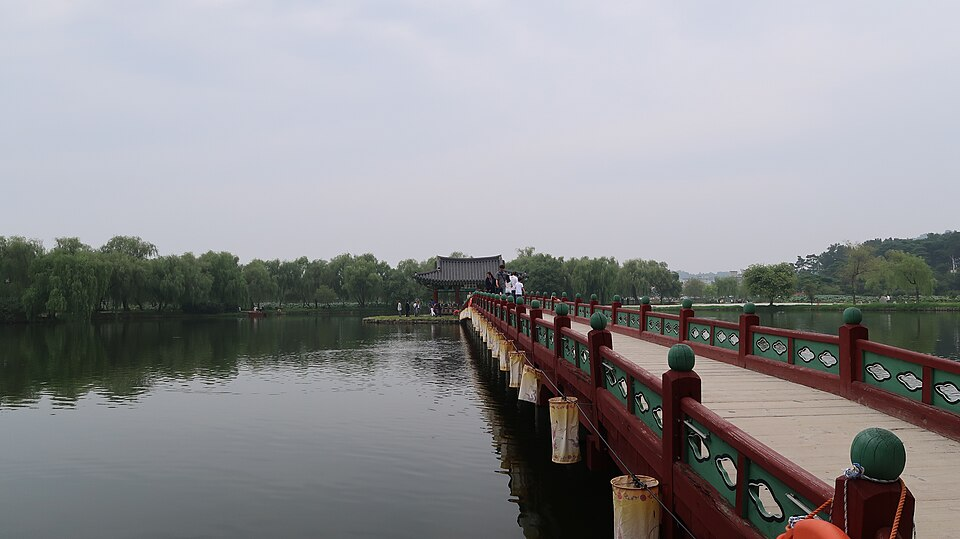

부여 검정고시 — 일하면서 준비하는 성인의 하루 30분 설계

“하고 싶은 마음은 오래됐는데 시간이 없어서요.” 부여 검정고시를 문의하시는 성인 분들께 가장 많이 듣는 말입니다. 그런데 상담을 해 보면 시간이 아주 없는 경우는 드뭅니다. 시간이 덩어리로 없을 뿐이에요. 여기서부터 계획을 다시 짜야 합니다.
“두 시간 비면 시작하겠다”가 제일 위험합니다
일하면서 준비하시는 분들이 가장 자주 빠지는 함정입니다. 두 시간이 통으로 비는 날은 한 달에 몇 번 없고, 그날은 대개 피곤해서 못 합니다. 그렇게 미루다 보면 “나는 시간이 없어서 못 하는 사람”이라는 결론만 남아요.
반대로 하루 30분은 거의 매일 만들 수 있습니다. 출근 전 20분, 점심시간 10분, 퇴근 후 30분 중 하나면 충분합니다. 중요한 건 길이가 아니라 끊기지 않는 것입니다. 사흘 몰아서 여섯 시간 하는 것보다 매일 30분씩 엿새가 훨씬 많이 남습니다.
30분을 무엇에 쓸지 미리 정해 두세요
- 평일 30분은 “짧게 끝나는 것”만 — 어휘, 계산 연습, 외운 것 다시 보기처럼 시작과 끝이 분명한 일을 넣습니다. 새 단원 이해는 평일 밤에 잘 안 들어갑니다.
- 무엇을 할지 전날 정해 둡니다 — 30분 중 10분을 “뭐 하지” 고민에 쓰면 실제로 남는 건 20분입니다. 책 펴는 순간 바로 시작되게 해 두세요.
- 주말엔 두 시간 한 덩어리 — 새로운 단원을 이해하는 건 여기서 합니다. 주말에 이해하고, 평일에 다지는 구조입니다.
과목 합격제가 직장인에게 가장 유리한 제도입니다
검정고시는 전 과목 평균 60점 이상이면 합격이고, 60점을 넘긴 과목은 과목 합격으로 남습니다. 다음 회차에는 남은 과목만 보면 된다는 뜻이에요.
이게 왜 중요하냐면, 시간이 부족한 분일수록 “한 번에 전 과목”이라는 부담 때문에 시작을 못 하시거든요. 전 과목을 한꺼번에 끝낼 자신이 없어도 괜찮습니다. 이번에 몇 과목을 확실히 끝내고, 그 과목은 다시 안 본다고 생각하면 준비가 훨씬 가벼워집니다. 어떤 과목부터 잡을지는 지금 실력과 남은 기간을 보고 정합니다.
부여에서 이렇게 함께합니다
저희는 1:1 맞춤 과외라 수업 시간을 학생 일정에 맞춥니다. 교대 근무를 하시면 요일이 고정되지 않아도 되고, 늦은 저녁이나 주말 시간대도 조율이 가능합니다. 부여 읍내와 인근 지역은 방문 수업이 가능하고, 오가는 시간이 아깝다면 화상(줌) 수업으로 집에서 그대로 진행합니다. 퇴근하고 바로 책상에 앉는 쪽이 이동하는 것보다 오래 가는 분이 많습니다.